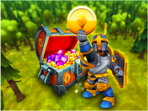
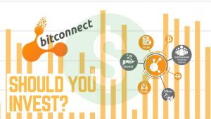
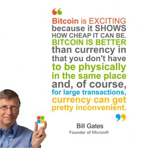

<?xml version="1.0" encoding="UTF-8"?><rss version="2.0"
	xmlns:content="http://purl.org/rss/1.0/modules/content/"
	xmlns:wfw="http://wellformedweb.org/CommentAPI/"
	xmlns:dc="http://purl.org/dc/elements/1.1/"
	xmlns:atom="http://www.w3.org/2005/Atom"
	xmlns:sy="http://purl.org/rss/1.0/modules/syndication/"
	xmlns:slash="http://purl.org/rss/1.0/modules/slash/"
	>

<channel>
	<title>Cryptocurrency &#8211; BitRig</title>
	<atom:link href="https://www.bitrig.co.za/category/cryptocurrency/feed/" rel="self" type="application/rss+xml" />
	<link>https://www.bitrig.co.za</link>
	<description>Bitmain Mines &#124; Bitrig Start.Mining</description>
	<lastBuildDate>Mon, 05 Mar 2018 09:46:33 +0000</lastBuildDate>
	<language>en-ZA</language>
	<sy:updatePeriod>hourly</sy:updatePeriod>
	<sy:updateFrequency>1</sy:updateFrequency>
	<generator>https://wordpress.org/?v=4.8.2</generator>
	<item>
		<title>Crypto Websites to Watch</title>
		<link>https://www.bitrig.co.za/2018/02/02/crypto-websites-to-watch/</link>
		<pubDate>Fri, 02 Feb 2018 05:10:30 +0000</pubDate>
		<dc:creator><![CDATA[rigcrew]]></dc:creator>
				<category><![CDATA[Cryptocurrency]]></category>

		<guid isPermaLink="false">https://www.bitrig.co.za/?p=37112</guid>
		<description><![CDATA[We’re fond of saying that smart investors always know what’s going on with their investment. So we’ve gone on a mission this month to find you some of the best resources for learning more, watching and discussing cryptocurrencies. Check out some of these cryptocurrency websites, forums and message boards you should be reading regularly if&#8230;]]></description>
				<content:encoded><![CDATA[<p><b>We’re fond of saying that smart investors always know what’s going on with their investment. </b><span style="font-weight: 400;">So we’ve gone on a mission this month to find you some of the best resources for learning more, watching and discussing cryptocurrencies. Check out some of these cryptocurrency websites, forums and message boards you should be reading regularly if you plan to invest soon – or have already taken the plunge.</span></p>
<h4><b>Cryptocurrency News and Headlines</b></h4>
<p><a href="https://coinmarketcap.com/"><b>Coin Market Cap</b></a> <span style="font-weight: 400;">is the one of the most popular sites for keeping an eye on the value and market caps of the various cryptocurrencies – and it also tells you just what’s happening in the cryptocurrency world as it happens, so it’s a great website to bookmark as a resource.</span></p>
<p><a href="https://www.coindesk.com/"><b>CoinDesk</b></a><span style="font-weight: 400;"> calls itself the “leader in blockchain news”, and we’ve always found that its headlines are pretty darn up-to-date. Another great website to bookmark for your cryptocurrency news.</span></p>
<p><a href="https://www.crypto-news.net/"><b>CryptoNews</b></a><span style="font-weight: 400;"> is another website that keeps readers up to date with new developments in cryptocurrency – the highs, the lows and the new currencies that are about to make a difference. Keep an eye on it, and also visit their YouTube channel for videos related to cryptocurrencies and news.</span></p>
<h4><b>Cryptocurrency Forums and Message Boards</b></h4>
<p><span style="font-weight: 400;">Need to know if a cryptocurrency is legit? Or maybe you just have a few quick questions about cryptocurrency for a fellow-investor. Forums could even be the right place to hear about more cryptocurrency investment opportunities as they’re announced by other users and investors. Check out some of these cool message boards&#8230;</span></p>
<p><a href="https://www.reddit.com/r/Bitcoin/"><b>Reddit</b></a></p>
<p><span style="font-weight: 400;">Reddit has become the go-to place for internet news, and they’ve got a section for users to discuss cryptocurrencies. Many important cryptocurrency announcements have happened right here, so it’s worth checking out and searching through as a huge knowledge base.</span></p>
<p><a href="https://bitcointalk.org/"><b>Bitcoin Talk</b></a></p>
<p><span style="font-weight: 400;">Bitcoin Talk is currently one of the largest three bitcoin discussion boards on the internet, so you’ll connect with thousands of investors and users with helpful tips and stories to tell. Go here if you want to get right into the middle of the cryptocurrency world.</span></p>
<p><a href="https://mastersofcrypto.com/forum/"><b>Masters of Crypto</b></a></p>
<p><span style="font-weight: 400;">Masters of Crypto is a little bit of a smaller community than the others mentioned on this list, but it’s worth joining for the expertise on there – and the fact that it’s a still-evolving and developing community highly on the rise.</span></p>
<p><a href="https://forum.bitcoin.com/"><b>Bitcoin Forums </b></a></p>
<p><span style="font-weight: 400;">We thought we&#8217;d follow that up with another large discussion forum for bitcoin investment, which you can find over at Bitcoin Forums. Many users are active on this one, and most are happy to share their tips or experience with newcomers – and if you find yourself unsure about </span><i><span style="font-weight: 400;">anything</span></i><span style="font-weight: 400;"> related to cryptocurrency, this is a good place to check it out first. Just hit the search function to see prior posts.</span></p>
<p><a href="https://bitco.in/forum/"><b>Bitco.in Forums</b></a></p>
<p><span style="font-weight: 400;">This website’s description notes that they welcome investors, developers and academics to the site to discuss bitcoin and cryptocurrency-related subjects – this makes it an excellent place to go if you’re into the development end of cryptocurrency, maybe even if you want to create your own.</span></p>
]]></content:encoded>
			</item>
		<item>
		<title>Cryptocurrency Property &#038; Car Markets</title>
		<link>https://www.bitrig.co.za/2018/02/02/cryptocurrency-property-car-markets/</link>
		<pubDate>Fri, 02 Feb 2018 04:37:20 +0000</pubDate>
		<dc:creator><![CDATA[rigcrew]]></dc:creator>
				<category><![CDATA[Cryptocurrency]]></category>

		<guid isPermaLink="false">https://www.bitrig.co.za/?p=37105</guid>
		<description><![CDATA[Many queries ask us “what can you buy with bitcoin?”, and it turns out that you can buy almost anything with cryptocurrency – including cars and property. So, if you’ve got some cryptocurrency stashed or mined, why don’t you consider turning it into assets? Here’s where you can buy cars and property in South Africa&#8230;]]></description>
				<content:encoded><![CDATA[<p><b>Many queries ask us “what can you buy with bitcoin?”</b><span style="font-weight: 400;">, and it turns out that you can buy almost anything with cryptocurrency – including cars and property. So, if you’ve got some cryptocurrency stashed or mined, why don’t you consider turning it into </span><i><span style="font-weight: 400;">assets</span></i><span style="font-weight: 400;">? Here’s where you can </span><b>buy cars and property in South Africa and internationally with cryptocurrency.</b></p>
<h4><b>Property</b></h4>
<p><b>For rentals, </b><span style="font-weight: 400;">real estate news site Home Times debated the position of whether or not South African tenants should be able to pay for their rent in cryptocurrency. Why not, we figure, as it’s already something happening overseas. You can read the original article at </span><a href="http://hometimes.co.za/2017/09/can-south-african-tenants-pay-rent-in-bitcoin/"><span style="font-weight: 400;">Home Times</span></a><span style="font-weight: 400;"> here.</span></p>
<p><span style="font-weight: 400;">If you’re </span><b>looking to buy instead</b><span style="font-weight: 400;">, the first real estate agency in South Africa to start accepting bitcoin as a payment method for transactions is </span><a href="http://www.devler.co.za/bitcoin/"><b>Devler</b></a><span style="font-weight: 400;">. They first started accepting cryptocurrency on the 1</span><span style="font-weight: 400;">st</span><span style="font-weight: 400;"> of June, 2016. Yes, properties listed on the site are </span><i><span style="font-weight: 400;">local</span></i><span style="font-weight: 400;">!</span></p>
<p><b>Bitcoin-Real Estate</b><span style="font-weight: 400;"> is a website that lists properties for sale and payable with bitcoin. Lucky for investors, they list properties internationally – and South African cryptocurrency investors will be happy to hear that it includes a couple South African properties too. Their listings can be found by </span><a href="http://bitcoin-realestate.com/"><span style="font-weight: 400;">visiting their website</span></a><span style="font-weight: 400;">.</span></p>
<p><b>BitPremier Real Estate</b><span style="font-weight: 400;"> is similar to the above-listed Bitcoin Real-Estate, though with much less local options – so only available to investors who prefer to invest in something internationally. Their listings can be found </span><a href="https://www.bitpremier.com/5-real-estate"><span style="font-weight: 400;">through their website.</span></a></p>
<p><b>Spendabit </b><span style="font-weight: 400;">is a super-useful search engine for just what you can spend your bitcoins on. </span><a href="https://spendabit.co/go?q=real+estate"><span style="font-weight: 400;">Here</span></a><span style="font-weight: 400;"> is their section for all search results matching “real estate” which includes both houses and empty lots.</span></p>
<h4><b>Cars</b></h4>
<p><span style="font-weight: 400;">If you wish you could just get behind the wheel of your dream car and drive it to your new destination – or just around the block – then it could be time to take your cryptocurrency and purchase a car. Here are some practical options for investors, including those in South Africa!</span></p>
<p><b>Bitcar</b><span style="font-weight: 400;"> is a cryptocurrency based around the ownership of a</span></p>
<p><b>Fury Ford Dealership in Amamzimtoti </b><span style="font-weight: 400;">has become the first South African car dearlership to accept payments for cars in bitcoin – either in full or as a deposit, according to their website. Take advantage of this and cash out your bitcoins for a car by visiting their </span><a href="http://www.furyfordtoti.co.za/bitcoin"><span style="font-weight: 400;">website’s bitcoin page.</span></a></p>
<p><a href="http://www.spendbitcoins.com/places/c/car-dealers/"><b>Spend Bitcoins</b></a><span style="font-weight: 400;"> is another catalog website for where you can spend your cryptocurrency. Here is their section for car dealers.</span></p>
<p><b>Idom, the largest car dealership in Japan,</b><span style="font-weight: 400;"> is now also accepting bitcoin as a payment method – if you’re traveling or don’t mind having your vehicles shipped your way, this could still be a viable option for investors. Read the original article in Finance Magnates </span><a href="https://www.financemagnates.com/cryptocurrency/news/japans-largest-car-dealership-now-accepts-bitcoin/"><span style="font-weight: 400;">by clicking here</span></a><span style="font-weight: 400;">.</span></p>
<p><span style="font-weight: 400;">What will you be buying with your cryptocurrency this year? If you haven’t invested or mind yet, we can help you!</span></p>
]]></content:encoded>
			</item>
		<item>
		<title>Weird Cryptocurrencies</title>
		<link>https://www.bitrig.co.za/2018/01/15/weird-cryptocurrencies/</link>
		<pubDate>Mon, 15 Jan 2018 10:15:19 +0000</pubDate>
		<dc:creator><![CDATA[rigcrew]]></dc:creator>
				<category><![CDATA[Cryptocurrency]]></category>

		<guid isPermaLink="false">https://www.bitrig.co.za/?p=37067</guid>
		<description><![CDATA[By now, most of the players in the cryptocurrency game will have heard of, mined or bought cryptocurrencies like Bitcoin, Litecoin, Etherium or XRP. But the cryptocurrency revolution has brought a lot of new players to the market, and, well, some of their names are a little bit weird. Here are some of the cryptocurrencies&#8230;]]></description>
				<content:encoded><![CDATA[<p><span style="font-weight: 400;">By now, most of the players in the cryptocurrency game will have heard of, mined or bought cryptocurrencies like </span><b>Bitcoin, Litecoin, Etherium </b><span style="font-weight: 400;">or </span><b>XRP</b><span style="font-weight: 400;">. But the cryptocurrency revolution has brought a lot of new players to the market, and, well, some of their names are a little bit weird. Here are some of the cryptocurrencies with the weirdest names &#8211; and what they&#8217;re currently worth.</span></p>
<p><a href="https://coinmarketcap.com/currencies/pizzacoin/" target="_blank" rel="noopener"><span style="font-weight: 400;">PizzaCoin</span></a></p>
<p><span style="font-weight: 400;">0.002264 USD </span></p>
<p><span style="font-weight: 400;">We know the first real-life items bought with Bitcoin was </span><b>two pizzas for 10, 000</b><span style="font-weight: 400;"> bitcoins. But what if you really, </span><i><span style="font-weight: 400;">really</span></i><span style="font-weight: 400;"> love pizza? Then you can try this coin named for the round, breaded, cheese-covered food we all love. From what we can tell, PizzaCoin kicked off in 2014. From a forum post advertising it: &#8220;PizzaCoin matches the genuinity and simplicity of a pizza with high tech futuristic global currency.&#8221; </span></p>
<p><span style="font-weight: 400;">Okay, guys&#8230;</span></p>
<p><a href="https://ufocoin.net/" target="_blank" rel="noopener"><b>UFO Coin</b></a></p>
<p><span style="font-weight: 400;">0.004284 USD</span></p>
<p><span style="font-weight: 400;">According to the official website for UFO Coin, their mission is “to promote decentralization, improve and spread the adoption of the blockchain technology by active development and promotion.” Far more than just a new, weird-named cryptocurrency, people part of the UFO Coin are on a constant journey to improve not just the currency’s value, but the way the currency works and processes through the network so that it has a small impact on memory usage.</span></p>
<p><a href="https://dentacoin.com/" target="_blank" rel="noopener"><b>DentaCoin</b></a></p>
<p><span style="font-weight: 400;">0.003742 USD</span></p>
<p><span style="font-weight: 400;">DentaCoin sounds like the modern cryptocurrency used by the tooth fairy! And, well, it </span><i><span style="font-weight: 400;">is</span></i><span style="font-weight: 400;"> almost something like that. This cryptocurrency was, according to their official website, developed specifically for “the global dentistry industry through the Ethereum blockchain by using a value-based approach that brings all the market participants into co-working communities.” </span></p>
<p><a href="http://hobonickels.info/"><b>HoboNickels</b></a></p>
<p><span style="font-weight: 400;">0.032115 USD</span></p>
<p><span style="font-weight: 400;">According to their website, HoboNickels was set up to make online transactions easy and efficient – and we’d say their exchange rate shows it works! Somehow the name doesn’t bring up images of untold riches, though we’d still say it’s a little catchy.</span></p>
<p><a href="https://coinmarketcap.com/currencies/sexcoin/" target="_blank" rel="noopener"><b>SexCoin</b></a></p>
<p><span style="font-weight: 400;">Sex sells, right? So why don’t we just start up a currency called SexCoin and get it over with? Oh, right, because someone’s already beaten us to it. Yes, SexCoin is specifically set up to pay for “adult entertainment”, and it’s currently listed on CoinMarketCap as going for 0.119315USD. That’s… That’s actually not bad.</span></p>
<p><a href="https://insanecoin.com/" target="_blank" rel="noopener"><b>InsaneCoin </b></a></p>
<p><span style="font-weight: 400;">$0.119422 USD</span></p>
<p><span style="font-weight: 400;">InsaneCoin has experienced a growth of 53.04% according to CoinMarketCap, and there’s absolutely nothing funny about that! We’d like to keep an eye on this one just for interest’s sake. We kind of have to go with their pun here and say that the growth of InsaneCoin so far has been a little, well, insane&#8230;</span></p>
<p><a href="https://www.nyancoin.info/whatis.nyan" target="_blank" rel="noopener"><b>Nyancoin</b></a></p>
<p><span style="font-weight: 400;">0.008035 USD</span></p>
<p><span style="font-weight: 400;">We figured we’d end the article on a kind of cute note. Anyone remember a meme known as Nyancat? </span><a href="http://www.nyan.cat/" target="_blank" rel="noopener"><span style="font-weight: 400;">(You can find the original here.)</span></a><span style="font-weight: 400;"> Now, there’s NyanCoin – apparently the first officially licensed cryptocurrency so far. Cool!</span></p>
<p><i><span style="font-weight: 400;">Prices were quoted from CoinMarketCap.com on 12 January 2018 GMT+2 and were current at the time of writing. Remember to check the </span></i><b><i>updated</i></b><i><span style="font-weight: 400;"> market exchange rate of the cryptocurrency first.</span></i></p>
]]></content:encoded>
			</item>
		<item>
		<title>Spot the Fake News</title>
		<link>https://www.bitrig.co.za/2018/01/15/spot-the-fake-news/</link>
		<pubDate>Mon, 15 Jan 2018 10:07:45 +0000</pubDate>
		<dc:creator><![CDATA[rigcrew]]></dc:creator>
				<category><![CDATA[Cryptocurrency]]></category>

		<guid isPermaLink="false">https://www.bitrig.co.za/?p=37064</guid>
		<description><![CDATA[Fake news is everywhere these days, and many unwitting people might have taken a fake news story seriously and clicked on “share” &#8211; or worse, used it to influence their investment advice. We’ve taken a look and rounded up some bitcoin fake news – plus tips on how to spot a fake news story.  Headline:&#8230;]]></description>
				<content:encoded><![CDATA[<p><b>Fake news is everywhere these days, </b><span style="font-weight: 400;">and many unwitting people might have taken a fake news story seriously and clicked on “share” &#8211; or worse, used it to influence their investment advice. We’ve taken a look and rounded up some bitcoin fake news – plus tips on how to spot a fake news story. </span></p>
<p><a href="https://www.snopes.com/chuck-e-cheese-bitcoin/" target="_blank" rel="noopener"><b>Headline: </b><span style="font-weight: 400;">Man Sells Chuck-E Cheese Coins as Bitcoins</span></a></p>
<p><span style="font-weight: 400;">You might’ve heard about this one – even though South Africa doesn’t </span><i><span style="font-weight: 400;">have</span></i><span style="font-weight: 400;"> a Chuck E Cheese franchise – and you might’ve even shared it from the timeline of a friend abroad. But, alas, it’s not true</span><a href="https://www.snopes.com/chuck-e-cheese-bitcoin/" target="_blank" rel="noopener"><span style="font-weight: 400;"> according to fact-checking website Snopes.com. </span></a><span style="font-weight: 400;">No, there wasn’t a scammer selling Chuck E. Cheese tokens as bitcoins, but that doesn’t mean you don’t have to be careful on the internet! Apparently, the original story was published by a parody news website – go figure!</span></p>
<h4><b>Headline: Amazon Now Accepting Bitcoin!</b></h4>
<p><span style="font-weight: 400;">Somewhere around the end of 2017, a couple of news links popped up claiming that you could now pay for Amazon purchases with cryptocurrency, it turns out that it was a simple case of news that jumped the gun. </span><a href="https://www.google.co.za/url?sa=t&rct=j&q=&esrc=s&source=web&cd=34&cad=rja&uact=8&ved=0ahUKEwi-rYfJ4NLYAhXEPxQKHfalD7A4HhAWCDIwAw&url=https://www.ccn.com/debunked-rumor-amazon-will-accept-bitcoin-fake-news/&usg=AOvVaw2CTCS0rx5Raz5HHdAHii0Y" target="_blank" rel="noopener"><span style="font-weight: 400;">According to CNN</span></a><span style="font-weight: 400;">, Amazon is – as of the time of writing – not accepting bitcoins yet.</span></p>
<p><span style="font-weight: 400;">What we </span><i><span style="font-weight: 400;">can</span></i><span style="font-weight: 400;"> tell you as real news is that Amazon </span><a href="https://www.usatoday.com/story/tech/news/2017/11/01/amazon.../823546001/" target="_blank" rel="noopener"><span style="font-weight: 400;">has bought three domain names that relate to cryptocurrency</span></a><span style="font-weight: 400;">, which tells us that they just might be entering the game in the near future. Like we said, they jumped the gun just a little too soon.</span></p>
<h4><b>Headline: PNP Accepting Bitcoin </b></h4>
<p><span style="font-weight: 400;">In a spin of the story above, some outlets reported that South African retailer Pick n Pay has now started accepting bitcoin payments right at the checkout points. Again, this was a case of news jumping the gun: Pick n Pay noted that they only </span><i><span style="font-weight: 400;">trialed </span></i><span style="font-weight: 400;">bitcoin payments and it seems like only time will be able to tell us when they start accepting payments in cryptocurrency.</span></p>
<p><a href="http://www.news.com.au/finance/work/at-work/aussies-targeted-with-faketortion-email-scam/news-story/47500ce7081b20769f53672ea3e2d0f1" target="_blank" rel="noopener"><b>Headline: Email Scam</b></a></p>
<p><span style="font-weight: 400;">This one isn’t fake news, but a new scam that might just land in your inbox. According to News.com.au, Australians had been targeted with an email from an unknown sender that claims it has a virus attached originating from an adult website – and would expose your viewing history unless you </span><i><span style="font-weight: 400;">pay them in bitcoin</span></i><span style="font-weight: 400;">.  We haven’t found any reports of this scam in South Africa, but we thought we’d warn our readers about it ahead!</span></p>
<h4><b>Verifying a news story</b></h4>
<p><span style="font-weight: 400;">Not sure if a news story is real or fake? Here’s what you can do to check it out.</span></p>
<p>&nbsp;</p>
<ul>
<li><b>Look it up:<span style="font-weight: 400;"> Copy and paste the headline of the news story into your search engine and </span><i><span style="font-weight: 400;">see if the news story has been debunked anywhere, or posted as news on any other news websites.</span></i></b></li>
</ul>
<ul>
<li>Verify it elsewhere:<span style="font-weight: 400;"> Websites like Snopes.com and FakeNewsChecker keep an eye on the latest fake news and chain messages circulating the internet and tells you whether they are for real or should raise an eyebrow.</span></li>
</ul>
<ul>
<li>Ask! <span style="font-weight: 400;">If you spot any cryptocurrency news you aren’t sure about, get in touch with us and we’ll look into it for you. After all, we’re here to help you!</span></li>
</ul>
<p>&nbsp;</p>
<p><b>Have you spotted any fake news regarding cryptocurrencies or bitcoins online? Let us know, or if you have any questions about cryptocurrency don’t be afraid to ask!</b></p>
]]></content:encoded>
			</item>
		<item>
		<title>The Parody Cryptocurrency</title>
		<link>https://www.bitrig.co.za/2018/01/15/the-parody-cryptocurrency/</link>
		<pubDate>Mon, 15 Jan 2018 10:02:16 +0000</pubDate>
		<dc:creator><![CDATA[rigcrew]]></dc:creator>
				<category><![CDATA[Cryptocurrency]]></category>

		<guid isPermaLink="false">https://www.bitrig.co.za/?p=37060</guid>
		<description><![CDATA[You might’ve spotted reports of what’s called “the parody cryptocurrency”. What on earth is it? No, it isn’t a cryptocurrency that’s set up to steal your money as some kind of cruel cosmic joke. In fact, it’s the complete opposite – and it might be worth checking into as an investment. Here’s more about DogeCoin&#8230;]]></description>
				<content:encoded><![CDATA[<p><span style="font-weight: 400;">You might’ve spotted reports of what’s called “the parody cryptocurrency”. What on earth is it? No, it isn’t a cryptocurrency that’s set up to steal your money as some kind of cruel cosmic joke. In fact, it’s the complete opposite – and it might be worth checking into as an investment. </span><b>Here’s more about DogeCoin or “the parody cryptocurrency” and why it might be worth keeping an eye on.</b></p>
<h4><b>The Beginning of the Meme</b></h4>
<p><span style="font-weight: 400;">Okay, so if you’re not too clued up on what’s going on in the world of meme’s, you might have spotted this dog’s face surrounded by text. For starters, the dog is a Shiba Inu, and according to our sources, the meme first surfaced on the world wide web in 2013.</span></p>
<p><span style="font-weight: 400;">You can find a Doge meme Generator to make your own memes </span><a href="https://imgflip.com/memegenerator/Doge" target="_blank" rel="noopener"><span style="font-weight: 400;">here</span></a><span style="font-weight: 400;">. But the story didn’t stop with the meme hitting the internet, or we wouldn’t be writing this to begin with.</span></p>
<h4><b>The Beginning of the Currency</b></h4>
<p><span style="font-weight: 400;">In 2013, more or less when the Doge meme started getting really popular, someone thought it would be a great idea to start a currency called DogeCoin. Yes, this was originally done as a joke. That someone is Australian Jackson Palmer, and since he created the cryptocurrency it spread almost as fast as the meme – and managed to spread fast and far enough to become a serious cryptocurrency almost overnight.</span></p>
<p><span style="font-weight: 400;">Recently, Dogecoin went nuts and broke the two million USD market cap. Completely, according to its creator, by accident. See reports on </span><a href="http://www.bbc.com/news/business-42602038" target="_blank" rel="noopener"><span style="font-weight: 400;">BBC</span></a><span style="font-weight: 400;">, </span><a href="https://www.investopedia.com/news/dogecoin-market-cap-hits-2-billion-launched-joke-currency/" target="_blank" rel="noopener"><span style="font-weight: 400;">Investopedia</span></a><span style="font-weight: 400;"> and </span><a href="https://www.cnbc.com/2018/01/08/a-parody-cryptocurrency-just-broke-2-billion-for-its-market-cap.html" target="_blank" rel="noopener"><span style="font-weight: 400;">CNBC</span></a><span style="font-weight: 400;">.  You can find </span><a href="http://dogecoin.com/" target="_blank" rel="noopener"><span style="font-weight: 400;">Dogecoin’s website over here</span></a><span style="font-weight: 400;"> or read more about Dogecoin at</span><a href="http://knowyourmeme.com/memes/dogecoin" target="_blank" rel="noopener"><span style="font-weight: 400;"> KnowYourMeme</span></a><span style="font-weight: 400;">, the internet’s Encyclopedia of memes – if you are ever in need of one!</span></p>
]]></content:encoded>
			</item>
		<item>
		<title>Cryptocurrencies Documentaries: Get the Facts!</title>
		<link>https://www.bitrig.co.za/2018/01/15/cryptocurrencies-documentaries-get-the-facts/</link>
		<pubDate>Mon, 15 Jan 2018 09:46:20 +0000</pubDate>
		<dc:creator><![CDATA[rigcrew]]></dc:creator>
				<category><![CDATA[Cryptocurrency]]></category>

		<guid isPermaLink="false">https://www.bitrig.co.za/?p=37053</guid>
		<description><![CDATA[Knowledge is power, and we’re here to teach you more about cryptocurrency and how you can earn some of it yourself. Here are some of the coolest cryptocurrency documentaries and books for those who want to learn more. Contact us if you have any specific questions about cryptocurrencies, bitcoins or any of the products available&#8230;]]></description>
				<content:encoded><![CDATA[<p><span style="font-weight: 400;">Knowledge is power, and we’re here to teach you more about cryptocurrency and how you can earn some of it yourself. Here are some of the coolest cryptocurrency documentaries and books for those who want to learn more. Contact us if you have any specific questions about cryptocurrencies, bitcoins or any of the products available on our website.</span></p>
<p><a href="https://www.vice.com/en_us/topic/cryptocurrency" target="_blank" rel="noopener"><b>Cryptocurrency Documentaries on VICE</b></a></p>
<p><span style="font-weight: 400;">VICE is well-known for their gritty, hard-hitting journalism: Click on the link above to be taken to their page for cryptocurrency documentaries and articles. </span></p>
<p><a href="https://www.netflix.com/title/80154500" target="_blank" rel="noopener"><b>Banking on Bitcoin (NETFLIX)</b></a></p>
<p><span style="font-weight: 400;">You might’ve heard about “that Netflix bitcoin documentary”. Well, this is that documentary: And it’s not too hard to see why people raved about it. Released in 2016, it was one of the mainstream releases to poke its feelers into the cryptocurrency world to find out more.  You can watch the trailer for Banking on Bitcoin over </span><a href="https://www.youtube.com/watch?v=tmxqlSevtkQ" target="_blank" rel="noopener"><b>here on YouTube</b></a><span style="font-weight: 400;">. It’s been called one of the best introductions to cryptocurrency, so it’s a great place to start.</span></p>
<p><a href="http://blockchain-documentary.com/" target="_blank" rel="noopener"><b>The Blockchain and U</b></a><b>s</b></p>
<p><span style="font-weight: 400;">The Blockchain and Us is a short, independently produced documentary about blockchain and its effects on society and the people in it. The film comes in at just under 33 minutes. It’s rated one of the top documentary films in the bitcoin genre, so it deserves a place on this list!</span></p>
<p><a href="https://www.jjjpaybackcenter.com/bitcoin-gospel/" target="_blank" rel="noopener"><b>The Bitcoin Gospel</b></a></p>
<p><span style="font-weight: 400;">The Bitcoin Gospel is a documentary specifically exploring the history of bitcoins and the writings of the creator Satoshi Nakamoto. If you want to know how bitcoin got here, this is the one to watch.</span></p>
<p><b>Books on Cryptocurrency</b></p>
<p><span style="font-weight: 400;">Are you more of a bookworm than a movie boffin? Check out some of these books on cryptocurrency to sharpen up your knowledge and maybe learn something interesting in the process.</span></p>
<p><b>Strategy for Information Markets/Micropayments</b></p>
<p><span style="font-weight: 400;">This little e-book is hosted for free on the online library Wikibooks, and it explains some of the basics about how one can buy, sell and trade bitcoins.  Basically, it’s a crash course if you know absolutely nothing about the topic yet. </span><a href="https://en.wikibooks.org/wiki/Strategy_for_Information_Markets/Micropayments" target="_blank" rel="noopener"><span style="font-weight: 400;">Read it by clicking here.</span></a></p>
<p><b>Bitcoin for Dummies</b></p>
<p><span style="font-weight: 400;">If you want to learn more about nearly any topic, head to the “for Dummies” series. It turns out they have an edition of Bitcoin for Dummies, too. Check it out on Wiley’s official website (with links to Amazon) </span><a href="https://www.wiley.com/en-us/Bitcoin+For+Dummies-p-9781119076131" target="_blank" rel="noopener"><span style="font-weight: 400;">over here</span></a><span style="font-weight: 400;">. </span></p>
<p><b>Bitcoin for the Befuddled</b></p>
<p><span style="font-weight: 400;">Bitcoin for the Befuddled is your perfect beginner’s guide to the bitcoin revolution. Published by No Starch Press, the book is available </span><a href="https://www.amazon.com/Bitcoin-Befuddled-Conrad-Barski/dp/1593275730" target="_blank" rel="noopener"><span style="font-weight: 400;">on Amazon</span></a><span style="font-weight: 400;"> and tells you more or less everything you need to know about how we got to bitcoin.</span></p>
<p><b>The Book of Satoshi</b></p>
<p><span style="font-weight: 400;">More of a biography freak? Then you should pick up “The Book of Satoshi”, a work that contains the collected writings of bitcoin’s mysterious creator Satoshi Nakamoto. Available </span><a href="http://www.bookofsatoshi.com/" target="_blank" rel="noopener"><span style="font-weight: 400;">here</span></a><span style="font-weight: 400;">.</span></p>
]]></content:encoded>
			</item>
		<item>
		<title>Cryptocurrency &#038; Games</title>
		<link>https://www.bitrig.co.za/2018/01/15/cryptocurrency-games/</link>
		<pubDate>Mon, 15 Jan 2018 08:53:45 +0000</pubDate>
		<dc:creator><![CDATA[rigcrew]]></dc:creator>
				<category><![CDATA[Cryptocurrency]]></category>

		<guid isPermaLink="false">https://www.bitrig.co.za/?p=37036</guid>
		<description><![CDATA[Cryptocurrency set out to change the way we see money, and its effects have reached into many industries. And it’s about to change the face of gaming. Now, there are cryptocurrencies set up specifically for gamers – and games set up specifically for cryptocurrencies. Here’s what we found. Coins for Gamers In December 2017, the&#8230;]]></description>
				<content:encoded><![CDATA[<p><span style="font-weight: 400;">Cryptocurrency set out to change the way we see money, and its effects have reached into many industries. And it’s about to change the face of gaming. Now, there are cryptocurrencies set up specifically for gamers – and games set up specifically for cryptocurrencies. Here’s what we found.</span></p>
<p><b>Coins for Gamers</b></p>
<p><span style="font-weight: 400;">In December 2017, the huge gaming industry player </span><i><span style="font-weight: 400;">Steam</span></i><span style="font-weight: 400;"> announced that due to “high fees” they will no longer be accepting in-game transactions paid for with Bitcoin. This made a lot of unhappy cryptocurrency gamers. </span><b>There are still other gaming retailers which accept bitcoin.</b><span style="font-weight: 400;"> See </span><a href="https://99bitcoins.com/who-accepts-bitcoins-payment-companies-stores-take-bitcoins/"><span style="font-weight: 400;">99 Bitcoins</span></a><span style="font-weight: 400;"> for a list of international online retailers accepting cryptocurrency payments.</span></p>
<p><span style="font-weight: 400;">Alternatively, there are a few cryptocurrencies set up just for games.</span></p>
<p><b>Esportcoins</b></p>
<p><span style="font-weight: 400;">Esportcoins is a cryptocurrency set up specifically for the world of gaming. That is, to pay for in-game items. Don’t want to use your bank account for online gaming transactions? Now you don’t have to. Keep an eye on the development and exchange rate of Esportcoins on </span><a href="https://esportcoins.com/"><span style="font-weight: 400;">their official website</span></a><span style="font-weight: 400;">.</span></p>
<p><a href="https://gamecredits.com/" target="_blank" rel="noopener"><b>GameCredits</b></a></p>
<p><span style="font-weight: 400;">GameCredits is another cryptocurrency set up specifically for gamers and paying for in-game items.</span></p>
<p><b>Bitcoin and Cryptocurrency Games</b></p>
<p><span style="font-weight: 400;">Many games now accept cryptocurrency as an in-game payment system, or allow you to play for Bitcoins.</span></p>
<p><a href="https://gamefaucet.com/" target="_blank" rel="noopener"><b>GameFaucet</b></a></p>
<p><span style="font-weight: 400;">How would you like to play games and get paid for it in Bitcoin? On GameFaucet, you get bitcoin bonuses from the website just for scrolling around and playing their games. </span><a href="https://www.funforcoin.com/"><span style="font-weight: 400;">FunforCoin</span></a></p>
<p><a href="http://www.satoshiquiz.com/" target="_blank" rel="noopener"><b>SatoshiQuiz</b></a></p>
<p><span style="font-weight: 400;">If you’ve always been a fan of shows like Who Wants to be a Millionaire, you should love SatoshiQuiz: It’s a trivia game with a major bonus. You get paid bitcoin bonuses for every correct answer. </span></p>
<p><a href="https://bitkong.com/" target="_blank" rel="noopener"><b>BitKong</b></a></p>
<p><span style="font-weight: 400;">Hey, do you remember playing Kong on the family TV? Here’s a version where you can catch Bitcoins instead. </span></p>
<p><a href="http://coinriddles.com/" target="_blank" rel="noopener"><b>CoinRiddles</b></a></p>
<p><span style="font-weight: 400;">If you prefer riddles and want to feel a little like you’re standing in front of the Sphinx in Ancient Egypt, check out CoinRiddles. Managed to guess their riddle? Well, then you get a cryptocurrency prize for it – cool!</span></p>
<p><a href="http://www.bitcoinriddle.com/" target="_blank" rel="noopener"><b>Bitcoin Riddle</b></a></p>
<p><span style="font-weight: 400;">Yes, here’s another site that can get you cryptocurrency prizes for answering the riddles correctly. Research shows that solving riddles and puzzles keeps the brain active – and healthy. Now you can get paid for it too &#8211; Enjoy!</span></p>
<p><a href="http://mandelduck.com/gameofbirds" target="_blank" rel="noopener"><b>Game of Birds</b></a></p>
<p><span style="font-weight: 400;">Game of Birds is for fans of Angry Birds, and you get to pick up what they call “bitcoin tips” as you play. This, apparently, became the second bitcoin game to be approved (officially) by Apple.</span></p>
<p><a href="https://www.crypto-games.net/" target="_blank" rel="noopener"><b>Crypto-Games</b></a></p>
<p><span style="font-weight: 400;">Cryptocurrencies have even affected the gambling world, and players can now play their favourite games like poker, roulette, blackjack or dice with cryptocurrencies including Bitcoin. (</span><b>Always</b><span style="font-weight: 400;"> check the local laws surrounding online gambling before you do.) </span></p>
<p><b>Not enough games for you? You can find more cryptocurrency and bitcoin games discussed and listed at the </b><a href="https://www.reddit.com/r/bitcoingames/" target="_blank" rel="noopener"><b>Bitcoin Games Reddit Thread</b></a><b>, or you can get in touch with us to tell us of any other cool bitcoin games you’ve encountered over the web.</b></p>
]]></content:encoded>
			</item>
		<item>
		<title>Should You Mine or Should You Invest?</title>
		<link>https://www.bitrig.co.za/2017/12/21/should-you-mine-or-should-you-invest/</link>
		<pubDate>Thu, 21 Dec 2017 08:16:50 +0000</pubDate>
		<dc:creator><![CDATA[rigcrew]]></dc:creator>
				<category><![CDATA[Cryptocurrency]]></category>

		<guid isPermaLink="false">https://www.bitrig.co.za/?p=37015</guid>
		<description><![CDATA[If you’ve decided to join the bitcoin revolution you’ve come to the right place. We’re more than just a market for bitcoins and miners: We’re here to answer your questions and provide an easy-to-use experience for our customers. Feel free to contact us if there’s anything you would like to know.  Bitcoin has reached record&#8230;]]></description>
				<content:encoded><![CDATA[<p><span style="font-weight: 400;">If you’ve decided to join the bitcoin revolution you’ve come to the right place. </span><b>We’re more than just a market for bitcoins and miners: We’re here to answer your questions</b><span style="font-weight: 400;"> and provide an easy-to-use experience for our customers. Feel free to contact us if there’s anything you would like to know. </span></p>
<p></p>
<p><span style="font-weight: 400;">Bitcoin has reached record highs and you might be sitting on the fence as to whether you should mine or invest.</span></p>
<p><span style="font-weight: 400;">Well, which is it? </span><b>Should you mine or should you invest? </b><span style="font-weight: 400;">It turns out that both have their own pro’s and cons. We took a look at whether people should mine part of the global blockchain or just straight up buy some bitcoins. Here’s what we found.</span></p>
<h4><b>Buying Bitcoins</b></h4>
<p><span style="font-weight: 400;">You can purchase bitcoins directly through our online store. Here’s why we’d say you should.</span></p>
<p>&nbsp;</p>
<ul>
<li><b><span style="font-weight: 400;">Buying bitcoins is an instant process, and you can immediately transfer your bitcoins peer-to-peer or use them to make purchases at thousands of companies or retailers that are now accepting bitcoin payments.</span></b></li>
</ul>
<ul>
<li><span style="font-weight: 400;">Bitcoin investments are still growing, and you could have money lying in your bitcoin wallet that’s getting more – instead of paper money and coins in your wallet that seem to be getting less every month.</span></li>
</ul>
<ul>
<li><span style="font-weight: 400;">You don’t need to make use of other resources like a bitcoin miner or bitcoin software to </span><i><span style="font-weight: 400;">buy</span></i><span style="font-weight: 400;"> bitcoin, so it makes a great starter investment. It is also available in smaller increments than one bitcoin (BTC) including what’s called a </span>satoshi<span style="font-weight: 400;">, one millionth of a bitcoin.</span></li>
</ul>
<ul>
<li><span style="font-weight: 400;">Eventually, the bitcoin pool will have reached its maximum of twenty-one million bitcoins. No, this will not be the end of bitcoin – but it will mean that people will be able to </span><i><span style="font-weight: 400;">buy</span></i><span style="font-weight: 400;"> bitcoins instead of mining them. (Yes, just the same way that people can only buy a gorgeous tiger’s eye gemstone instead of mine it today.) This means that you should </span>mine from the pool today<span style="font-weight: 400;"> so that </span>you can buy for the future.</li>
</ul>
<p>&nbsp;</p>
<h4><b>Mining Bitcoins</b></h4>
<p><span style="font-weight: 400;">Our website also offers bitcoin mining rigs – as well as some of the best advice on how to use them that you’ll find online. Here are some of the advantages to </span><i><span style="font-weight: 400;">mining </span></i><span style="font-weight: 400;">bitcoin as opposed to just buying it.</span></p>
<ul>
<li style="font-weight: 400;"><b>Setup and operating costs could, at this point, cost less than buying bitcoin – but allow for huge returns.</b><span style="font-weight: 400;"> With the cost of a single bitcoin rising higher and higher on the international market, it might work out cheaper to be able to mine from the international bitcoin pool as an investor.</span></li>
<li style="font-weight: 400;"><b>Bitcoin mining is an automated process.</b><span style="font-weight: 400;"> Get in touch with us to help you set it up and </span><i><span style="font-weight: 400;">let it run</span></i><span style="font-weight: 400;">. From there, watch your investment grow and the balance of your bitcoin wallet go up.</span></li>
<li style="font-weight: 400;"><b>Mining isn’t limited to bitcoins </b><span style="font-weight: 400;">and there are many other emerging cryptocurrencies to invest in, including Litecoin (LTC), Ethereum (ETH) and Ethereum Classic (ETC).</span></li>
</ul>
<p><span style="font-weight: 400;">If you’re still not sure which of the two options to choose, we’re happy to help!</span></p>
]]></content:encoded>
			</item>
		<item>
		<title>Quotes About Cryptocurrency</title>
		<link>https://www.bitrig.co.za/2017/12/21/quotes-about-cryptocurrency/</link>
		<pubDate>Thu, 21 Dec 2017 08:10:18 +0000</pubDate>
		<dc:creator><![CDATA[rigcrew]]></dc:creator>
				<category><![CDATA[Cryptocurrency]]></category>

		<guid isPermaLink="false">https://www.bitrig.co.za/?p=37012</guid>
		<description><![CDATA[The world is abuzz with bitcoin and cryptocurrency news: We’ve browed the internet for some of the coolest quotes about bitcoin and cryptocurrency from the world’s investment world. What do you have to say about cryptocurrency? If you’d like to find out more about how you can start investing and mining, contact us – we’re&#8230;]]></description>
				<content:encoded><![CDATA[<p><b>The world is abuzz with bitcoin and cryptocurrency news</b><span style="font-weight: 400;">: We’ve browed the internet for some of the coolest quotes about bitcoin and cryptocurrency from the world’s investment world. </span><b>What do you have to say about cryptocurrency?</b><span style="font-weight: 400;"> If you’d like to find out more about how you can start investing and mining, contact us – we’re happy to answer any and all of your questions!</span></p>
<p><span style="font-weight: 400;">“As a portfolio manager, when do you start advising to your clients that they have some cryptocurrency exposure? When will there be an index fund, a mutual fund of cryptocurrencies? It will happen.”</span></p>
<p><b>&#8211; Melanie Swan</b></p>
<p><span style="font-weight: 400;">“If you like gold, there are many reasons you should like Bitcoin.”</span></p>
<p><b>&#8211; Cameron Winklevoss</b></p>
<p><span style="font-weight: 400;">&#8220;You can&#8217;t stop things like Bitcoin. It will be everywhere and the world will have to readjust. World governments will have to readjust&#8221; </span></p>
<p><b>&#8211; John McAfee</b></p>
<p><span style="font-weight: 400;">“Well, I think it is working. There may be other currencies like it that may be even better. But in the meantime, there’s a big industry around Bitcoin.  People have made fortunes off Bitcoin, some have lost money. It is volatile, but people make money off of volatility too.” </span></p>
<p><b>&#8211; Richard Branson</b></p>
<p><span style="font-weight: 400;">“I do think Bitcoin is the first [cryptocurrency] that has the potential to do something like change </span></p>
<p><span style="font-weight: 400;">the world.” </span></p>
<p><b>&#8211; Peter Thiel</b></p>
<p><span style="font-weight: 400;">“Bitcoin seems to be a very promising idea. I like the idea of basing security on the assumption that the CPU power of honest participants outweighs that of the attacker. It is a very modern notion that exploits the power of the long tail.”</span></p>
<p><b>&#8211; Hal Finney</b></p>
<p><span style="font-weight: 400;">“Spend some time with Bitcoin. Learn it, challenge it, and use it. You can assume no government wants you adopting this system in any capacity, and for that reason alone it’s worth consideration by honest, moral, and industrious people.”</span></p>
<p><span style="font-weight: 400;">&#8211; </span><b>Erik Voorhees</b></p>
<p><span style="font-weight: 400;">“Economists and journalists often get caught up in this question: Why does Bitcoin have value? And the answer is very easy. Because it is useful and scarce.”  </span></p>
<p><b>&#8211; Erik Voorhees</b></p>
<p><span style="font-weight: 400;">“Bitcoin is here to stay. There would be a hacker uproar to anyone who attempted to take credit for the patent of cryptocurrency. And I wouldn&#8217;t want to be on the receiving end of hacker fury.”</span></p>
<p><b>&#8211; Adam Draper</b></p>
<p><span style="font-weight: 400;">Have you seen any other cryptocurrency quotes in the news? Let us know and we’ll add them to our next round-up of things people have said about bitcoin, mining and cryptocurrency.</span></p>
]]></content:encoded>
			</item>
	</channel>
</rss>

<!-- Localized -->